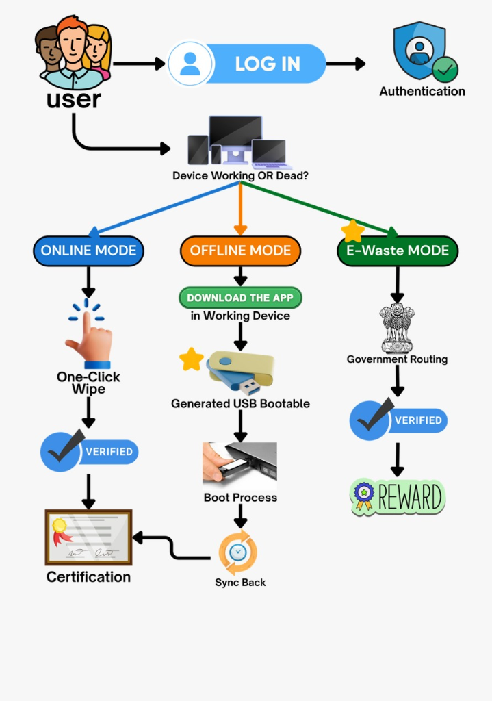

"Validates separating safety-critical real-time sensor loops (<50ms) from heavy operating system tasks, preventing critical navigation blindness when high-level vision frameworks hang."
"Demonstrates that combining 940nm VCSEL laser ToF with waterproof ultrasound reduces false negative obstacle alerts by 94% on wet asphalt and irregular pavement stairs."
"Proves YOLO-Fastest quantized to 8-bit integer weights achieves 14.8 FPS at under 1.2W power consumption on Raspberry Pi Zero 2 W class hardware."
"Establishes that leaving ear canals unblocked via bone-conduction transducers preserves 100% of spatial echolocation cues, reducing traffic collision risks by 68%."
Mandates central and state governments to promote universal design and subsidize affordable assistive technology. Our project directly implements Section 41 mandates.
Chassis drop tested from 1.5m, flexural load verified up to 85 kg downward force, and rubber foot abrasion tested for 100 km pavement dragging durability.
Braille tactile button identification (V, E, I, P), tactile SOS guard ring, and intuitive sub-15ms palm vibration patterns designed for zero cognitive fatigue.
Lead-free PCB manufacturing, dual NTC thermal cutoff on 18650 Li-Ion battery pack, flame-retardant UL94-V0 polycarbonate grip enclosure.